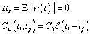
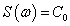
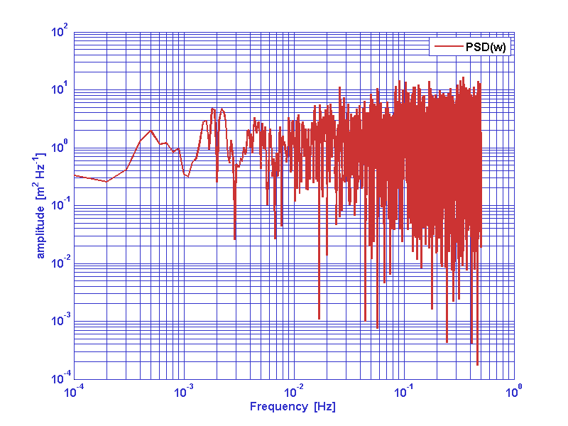
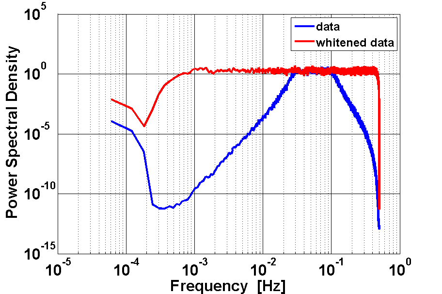
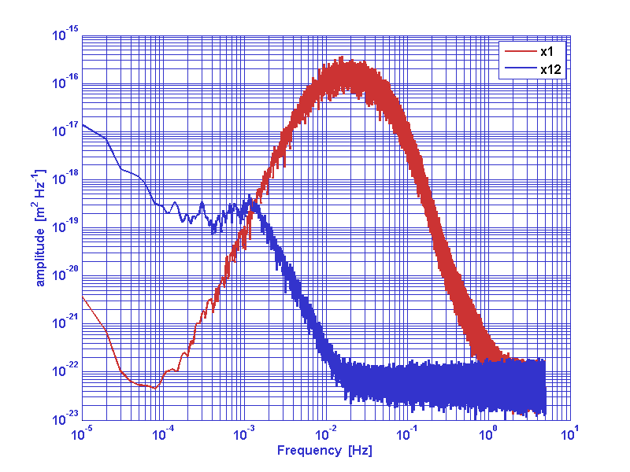
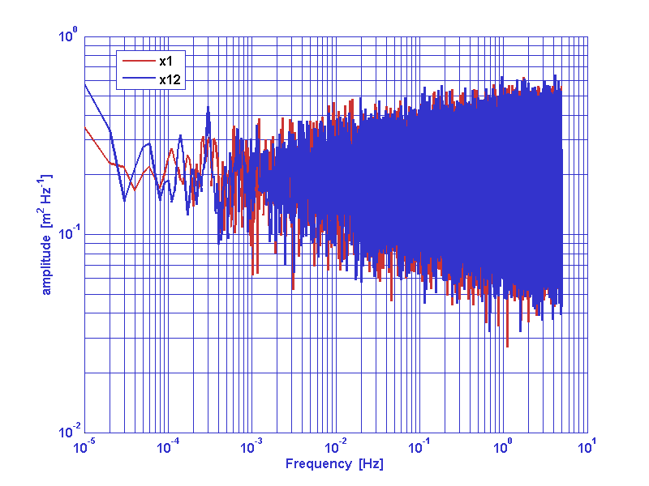
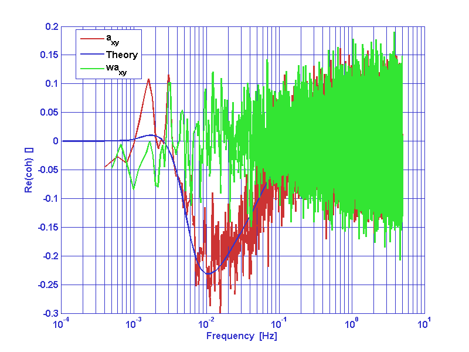

| LTPDA Toolbox™ | contents | |
|
A random process w(t) is considered white if it is zero mean and uncorrelated:

As a consequence, the power spectral density of a white process is a constant at every frequency:

In other words, The power per unit of frequency associated to a white noise process is uniformly distributed on the whole available frequency range. An example is reported in figure 1.
|  |
A non-white (colored) noise process is instead characterized by a given
distribution of the power per unit of frequency along the available frequency
bandwidth.
Whitening operation on a given non-white process corresponds to force
such a process to satisfy the conditions described above for a white process.
In LTPDA there are different methods for noise whitening:
They accept time series analysis objects as an input and they output noise whitening filters or whitened time series analysis objects.
buildWhitener1D performs a frequency domain identification of the system
in order to extract the proper whitening filter. The function needs a model
for the one-sided power spectral density of the given process. If no model
is provided, the power spectral density of the process is calculated with
the psd and bin_data algorithm.
whiten1D implements the same functionality of buildWhitener1D but it adds the filtering step so input data are filtered with the identified filter internally to the method.
firwhiten whitens the input time-series by building an FIR
whitening filter.
whiten2D whitens cross-correlated time-series. Whitening filters are constructed by a fitting procedure to the models for the corss-spectral matrix provided. In order to work with whiten2D you must provide a model (frequency series analysis objects) for the cross-spectral density matrix of the process.
We can now test an example of the one-dimensinal whitening filters capabilities. With the following commands we can generate a colored noise data series for parameters description please refer to the ao, miir and filter documentation pages.
fs = 1; % sampling frequency
% Generate gaussian white noise
pl = plist('tsfcn', 'randn(size(t))', ...
'fs', fs, ...
'nsecs', 1e5, ...
'yunits', 'm');
a = ao(pl);
% Get a coloring filter
pl = plist('type', 'bandpass', ...
'fs', fs, ...
'order', 3, ...
'gain', 1, ...
'fc', [0.03 0.1]);
ft = miir(pl);
% Coloring noise
af = filter(a, ft);
Now we can try to white colored noise.
If you want to try buildWhitener1D to get a whitening filter for the present colored noise, you can try the following code. Please refer to the buildWhitener1D documentation page for the meaning of any parameter. The result of the whitening procedure is reported in figure 2.
pl = plist(...
'MaxIter', 30, ...
'MinOrder', 9, ...
'MaxOrder', 15, ...
'FITTOL', 5e-2);
wfil = buildWhitener1D(af,pl);
aw = filter(af,wfil);
|  |
As an alternative you can try firwhiten to whiten the present colored noise. Please refer to the firwhiten documentation page for the meaning of any parameter. The result of the whitening procedure is reported in figure 3.
pl = plist(...
'Ntaps', 5000, ...
'Nfft', 1e5, ...
'BW', 5);
aw = firwhiten(af, pl);

|
We consider now the problem of whitening cross correlated data series. As a example we consider a typical couple of x-dynamics LTP data series. a1 and a2 are interferometer output noise data series. In oreder to whiten data we must input a frequency response model of the cross spectral matrix of the cross-correlated process.

Refer to whiten2D documentation page for the meaning of any parameter.
pl = plist(...
'csd11', mod11, ...
'csd12', mod12, ...
'csd21', mod21, ...
'csd22', mod22, ...
'MaxIter', 75, ...
'PoleType', 3, ...
'MinOrder', 20, ...
'MaxOrder', 40, ...
'Weights', 2, ...
'Plot', false,...
'Disp', false,...
'MSEVARTOL', 1e-2,...
'FITTOL', 1e-3);
[aw1,aw2] = whiten2D(a1,a2,pl);
|  |  |
|  |

|
| |
Data gap filling | Signal Processing in LTPDA | |
©LTP Team